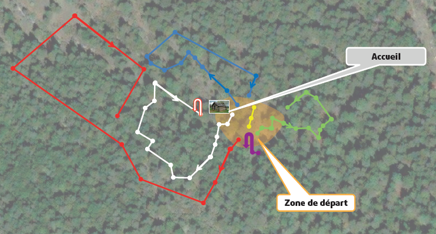

Nos Parcours
- Tous les parcours sont équipés de systèmes de longes rendant impossible leur décrochage tout au long des activités.
- Vous évoluerez donc en toute sécurité dans l’ensemble du parc Accro Verdon.
- Une initiation est systématiquement dispensée par les opérateurs afin d’expliquer le fonctionnement du matériel.
Parcours Pichons
- Accessible à partir de 3 ans, si taille inférieure à 1m20, accompagnateur obligatoire.
- Avec des plateformes situées à 1,50 m de hauteur maximum, vous pourrez accompagner vos enfants tout au long de l’activité. Descente en luge, tyroliennes, mur d’escalade...un parcours dédié aux aventuriers en herbe!
Parcours Jovents
- Accessible à partir de 7 ans, taille minimum 1m20.
- Ce parcours est varié: tyroliennes, passerelle chinoise, monocycle... Les plateformes sont situées entre 3 et 5 m du sol. Parfait pour s’échauffer avant de se lancer dans les autres parcours, les plus jeunes y trouveront déjà quelques défis.
Parcours Envolada
- Accessible à partir de 7 ans, taille minimum 1m20.
- Avec sa plus haute plateforme située à 14m offrant une vue imprenable sur le grand Margès et le plateau de Valensole, faites le plein de sensations grâce à ce parcours composé de 9 tyroliennes.
Parcours Chorma
- Accessible à partir de 11 ans, taille minimum 1m30.
- Mêlant force et adresse avec des plateformes situées entre 5 et 8 m, ce parcours très complet se termine par un saut dans le vide, de quoi faire frissonner les plus aguerris!
Parcours Vira-Vira
- Accessible à partir de 7 ans, taille minimum 1m20.
- Composé d’un mur d’escalade légèrement déversant suivi d’un saut dans le vide à 8m de haut, ce parcours fera transpirer toutes les générations!
